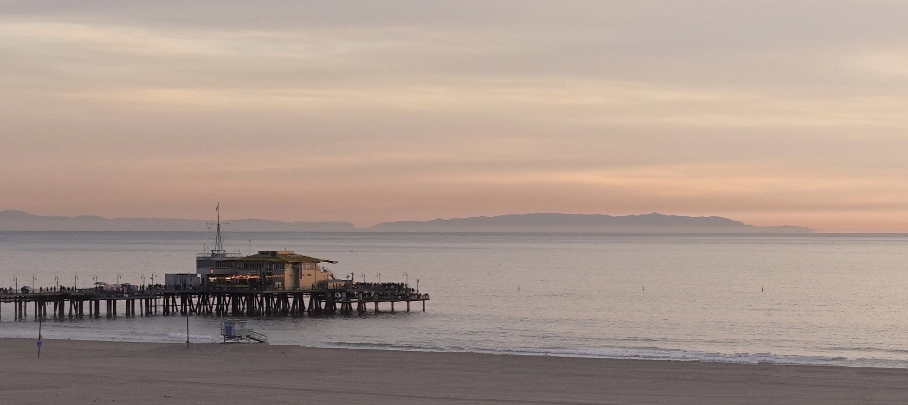

I like snapping photos. It’s my way of taking in whatever that’s around me: the city I live in, the buildings I pass by, the sky outside my window, the water that flows along my walk, the snow that whites my view, the foliage that takes on the gorgeous collections of colors, and so many others. Here are some of my collections: cities: architecture, water, and sky and sunglow.
I also enjoy reading. Language is so beautiful that it brings me pure joy to read through it and feel its power and tenderness. I read fictions (novels and short stories), travel writings, memoirs, essays, thrillers, and non-fictions that discuss social issues. I often find inspirations from reading, especially the different possibilities and dimensions of life that are delicately depicted within the lines. Here is my selected reading list.